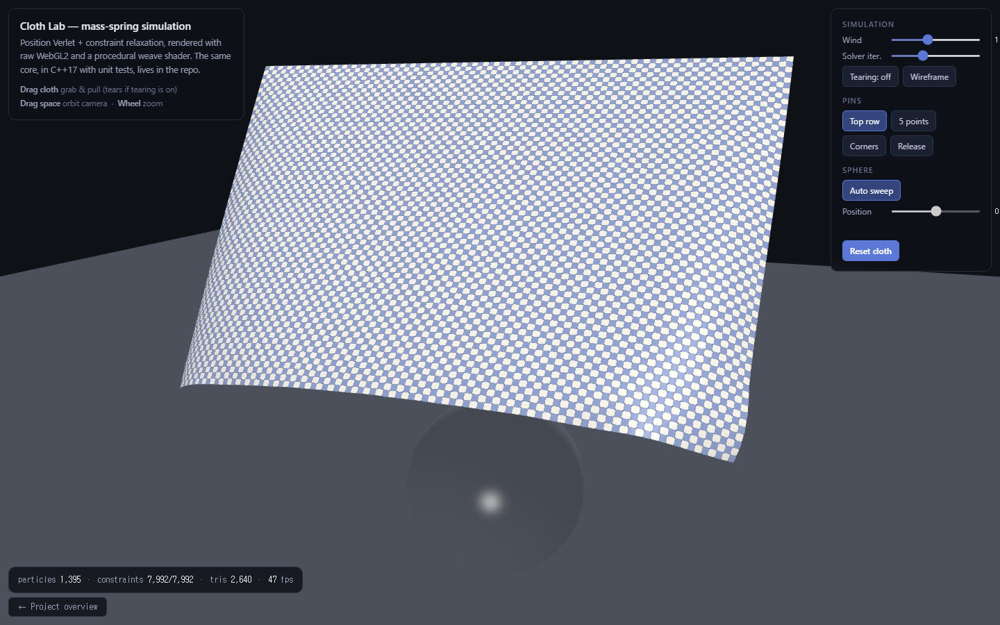
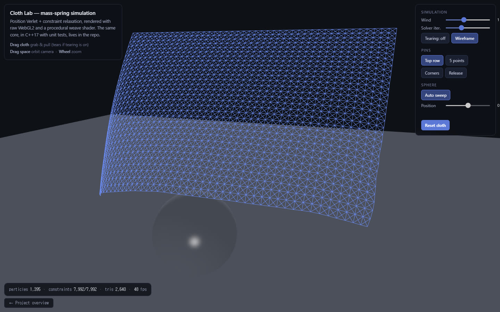
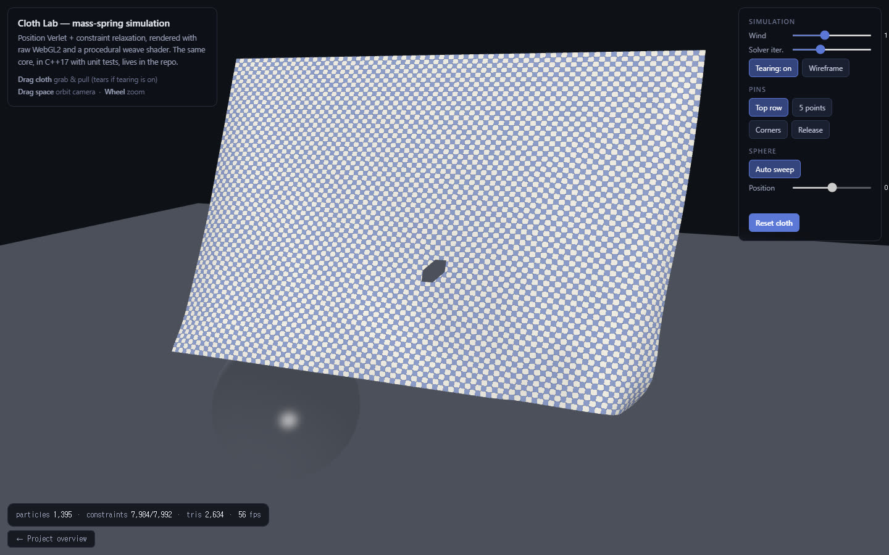

mass-spring 천 시뮬레이션을 처음부터 구현한 기록입니다. position Verlet과 제약 완화 솔버, 단위 테스트 290개로 검증한 C++17 코어, 그리고 라이브러리 없이 raw WebGL2와 직접 쓴 GLSL로 렌더링한 인터랙티브 데모. A mass-spring cloth simulation built from scratch: position Verlet with a constraint-relaxation solver, a C++17 core verified by 290 unit-test assertions, and an interactive demo rendered in raw WebGL2 with hand-written GLSL — no libraries.
3D 의상 시뮬레이션 회사의 R&D 공고를 읽고, 그 회사의 핵심 도메인을 직접 구현해 보기로 했습니다. 3D Gaussian Splatting으로 미분가능 렌더링을 바닥부터 짜 본 경험(splatting-viewer)이 있으니, 이번엔 시뮬레이션 쪽 기본기를 같은 방식으로 — 강의나 튜토리얼을 따라가는 게 아니라, 물리 모델부터 셰이더까지 한 층씩 직접. I read an R&D posting from a 3D garment-simulation company and decided to build their core domain myself. Having implemented differentiable rendering from the ground up for 3D Gaussian Splatting (splatting-viewer), I took the same approach to the simulation side — not following a tutorial, but building each layer from the physics model to the shader.
천은 45×31 파티클 격자로 표현합니다. 파티클 사이를 세 종류의 거리 제약이 잇습니다 — 종류마다 막는 변형이 다릅니다. The cloth is a 45×31 particle grid. Three kinds of distance constraints connect the particles — each resists a different deformation.
처음 떠오르는 방법은 훅 법칙으로 스프링 힘을 계산해 explicit Euler로 적분하는 것입니다. 문제는 천에 필요한 뻣뻣한 스프링일수록 안정 조건(k·dt²)이 가혹해져서, 강성을 올리면 시뮬레이션이 터진다는 것. The obvious approach is Hooke's-law spring forces integrated with explicit Euler. The problem: the stiff springs cloth needs make the stability bound (k·dt²) brutal — turn up the stiffness and the simulation explodes.
그래서 position Verlet + 제약 완화(relaxation)를 택했습니다. 속도를 따로 저장하지 않고 현재/직전 위치에서 암시적으로 얻고, 매 스텝 모든 제약을 여러 번 돌며 두 파티클을 rest length로 끌어당깁니다. 무조건 안정적이고, 강성은 스프링 상수가 아니라 반복 횟수로 조절됩니다 — 데모의 "Solver iter." 슬라이더가 바로 그것입니다. So I used position Verlet + constraint relaxation: velocity lives implicitly in the current/previous positions, and each step repeatedly projects every constraint back toward its rest length. It is unconditionally stable, and stiffness is controlled by the iteration count instead of a spring constant — that's exactly what the "Solver iter." slider in the demo does.
// The whole solver — from cpp/include/cloth/cloth.hpp for (int it = 0; it < params.iterations; ++it) { for (auto& c : cons_) { if (!c.alive) continue; const Vec3 d = pos_[c.b] - pos_[c.a]; const float len = d.length(); const float wa = invMass_[c.a], wb = invMass_[c.b]; // pinned → 0 const Vec3 corr = d * ((len - c.rest) / (len * (wa + wb))); pos_[c.a] += corr * wa; // both ends move toward rest length, pos_[c.b] -= corr * wb; // weighted by inverse mass } }
C++ 코어에는 Catch2 테스트 7개(어설션 290개)를 붙였습니다 — 격자 토폴로지, 고정점 불변, 자유낙하 ½gt² 궤적 비교, 솔버 수렴, 구 충돌 불변식, 찢어짐, 감쇠 안정성. 형식적인 테스트가 아니라, 실제로 아래 두 버그를 잡아냈습니다. The C++ core ships with 7 Catch2 test cases (290 assertions) — grid topology, pin invariance, free-fall against the analytic ½gt² trajectory, solver convergence, sphere-collision invariants, tearing, damped stability. They are not ceremony: they caught the two bugs below.
자유낙하 테스트가 2×1 격자를 만들자 모든 좌표가 NaN이 됐습니다. 원인: height/(rows-1)이 rows=1에서 inf가 되고, 0×inf = NaN이 전체로 전파. 퇴화 격자를 가드해서 해결.
The free-fall test built a 2×1 grid and every coordinate went NaN. Cause: height/(rows-1) becomes inf at rows=1, and 0×inf = NaN propagates everywhere. Fixed by guarding degenerate grids.
- dy = height / (rows - 1); + dy = rows > 1 ? height / (rows - 1) : 0.f;
찢어짐 테스트가 실패했습니다. 완화 루프 안에서 찢어짐을 검사했는데, 찢어짐 면제인 bend 제약이 먼저 처리되며 길이를 복원해 버려 structural 제약이 과신장을 못 보는 것. 판정을 완화 이전의 별도 패스로 분리해 해결 — 순서에 의존하지 않게. The tearing test failed. The check ran inside the relaxation loop, and a tear-exempt bend constraint that happened to run first restored the length before the structural spring ever saw the overstretch. Fixed by moving tearing into its own pre-relaxation pass — order-independent.
- if (len > rest * factor) tear(); // inside relax loop + tearOverstretched(); // separate pass, pre-solve state + relax(iterations);
데모 렌더러는 라이브러리 없이 WebGL2로 직접 작성했습니다 — 행렬 수학, 버퍼 관리, 셰이더까지. 매 프레임 정점 법선을 재계산하고, gl_FrontFacing으로 양면을 다르게 셰이딩합니다(천 뒷면은 살짝 어둡고 따뜻하게). 천 표면의 직조 무늬는 텍스처가 아니라 프래그먼트 셰이더의 절차적 패턴입니다: 날실(warp)과 씨실(weft)이 셀마다 위아래를 교차하는 평직(plain weave)을 UV 공간에서 계산합니다.
The demo renderer is hand-written WebGL2 — matrix math, buffer management, and shaders, no libraries. Vertex normals are recomputed every frame, and gl_FrontFacing shades the two sides differently (the back of the cloth is slightly darker and warmer). The fabric pattern is not a texture: it's a procedural plain weave in the fragment shader, with warp and weft threads alternating over/under per cell in UV space.
// fragment shader — procedural plain weave (GLSL 300 es) vec2 t = vUV * vec2(96.0, 66.0); // thread frequency vec2 g = fract(t) - 0.5; float warp = 1.0 - smoothstep(0.30, 0.50, abs(g.x)); // vertical thread float weft = 1.0 - smoothstep(0.30, 0.50, abs(g.y)); // horizontal thread bool warpTop = mod(cell.x + cell.y, 2.0) < 1.0; // over/under alternation // indigo-dyed warp × undyed weft, shadow in the gaps between threads



상호작용도 직접 구현했습니다: 마우스 픽킹은 파티클을 화면 공간에 투영해 가장 가까운 것을 잡고, 드래그는 카메라 기저 벡터로 만든 레이를 파티클 깊이의 평면과 교차시켜 움직입니다. 바람은 삼각형 법선에 비례하는 공기역학적 힘(n·w)으로, 천이 통째로 밀리는 게 아니라 부풀게 만듭니다. Interaction is hand-rolled too: picking projects every particle to screen space and grabs the nearest; dragging intersects a camera-basis ray with a plane at the particle's depth. Wind is an aerodynamic per-triangle force (n·w along the normal) — which is why the cloth billows instead of translating.
물리는 먼저 C++17 헤더 라이브러리로 구현해 테스트로 검증한 뒤, 검증된 로직을 그대로 JavaScript로 포팅했습니다. 저장소 구성은 실무 그래픽스 팀의 개발 환경을 그대로 따랐습니다: The physics was implemented and test-verified in a C++17 header library first, then ported line-for-line to JavaScript. The repository mirrors a production graphics team's environment:
| 항목Item | 이 저장소This repo |
|---|---|
| 언어Language | C++17 (header-only core, 의존성 0) |
| 빌드Build | CMake (Ninja 호환) |
| 테스트Tests | Catch2 — 7 cases · 290 assertions |
| CI | GitHub Actions — Ubuntu · Windows · macOS 매트릭스 |
| 헤드리스 실행Headless run | cloth_headless — 720스텝 안정성 리포트, 불안정 시 exit 1 (CI 스모크 체크)720-step stability report; exits 1 if unstable (CI smoke check) |
$ ./cloth_headless # 45×31, wind + sphere, dt = 1/120
cloth 45x31 particles=1395 constraints=7992 dt=1/120
step maxStretch meanSpeed minY
120 14.0% 0.26108 -1.026
360 11.2% 0.37077 -1.031
720 5.9% 0.05797 -0.620
result: STABLE (max stretch 5.9% < 25% budget)